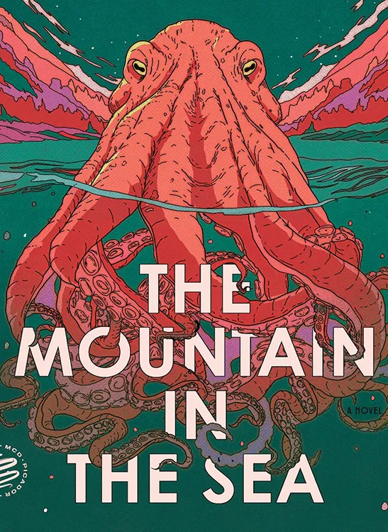

What's good?
Here are some random things I've been into lately
Quotes that go hard
It is more civilized to make fun of life than to bewail it.” “No man ever steps in the same river twice, for it's not the same river and he's not the same man.” “The happiness of your life depends upon the quality of your thoughts.”
- Seneca
- Heraclitus
- Marcus Aurelius (my goat)
The Mountain in the Sea
Earlier this year a friend recommended this sci-fi book to me with the following pitch: "it's a book about sapient octopus and AI". Needless
to say I was instantly sold and read cover to cover over one weekend. It was the first book I've read by the author Ray Nayler (check out some of his other works, he does a great job combining interesting sci-fi concepts with
important environmental concerns). This series basically follows a team of scientists who are studying a species of recently discovered sentient octopus, who have created their own language and society. When I was a kid, I wanted to
be a marine biologist and this book really brought out my inner child.
But also, it'll make you realize that if humanity does discover another form of sapient life (on this planet or the next), we're probably going to mess it up in a
nonchalant attempt to ruthlessly exploit them. At least in this book they were trying to build AI + robots based on the way an octopus' brain functions. Did you know that most of an octopus' neurons are actually distributed in its arms, while its central
brain acts more like a lightweight coordinator than a traditional control center? It's as if the octopus' brain is a background supervisor, like a small microcontroller, checking in on its arms – the real 'processors' – to gather feedback
and then suggesting responses rather than issuing direct commands. Unlike most animals, where the brain is in control, the octopus' arms act with a surprising level of autonomy, making decisions locally and just occasionally syncing with the central system.
That's pretty neat man.
I used to eat Chipotle a lot until I recently discovered in grad school that I could make it myself relatively easily and inexpensively. I basically would make this everyday once I mastered it (now I'll eat it like every other week), but it's a very simple recipe:
Here are the ingredients:
- 1-1.5 lbs of chicken (breast or thigh, by the way did you know that chicken thigh is technically red meat? I thought I was being healthy until my mom told me that its bad for your heart and honestly I haven't recovered, I've been using chicken breast like a Neanderthal since)
- 1.5 tsp salt
- 0.5 tsp MSG if you're feeling dangerous
- 1.5 tsp black pepper
- 1 tsp dried oregano
- 1 tsp cumin
- 1-1.5 tsp cayenne chili powder (depending on spice level)
- 4 cloves of minced garlic
- 1 tsp olive oil
- Around 10 oz of chipotle peppers in adobo sauce
All the spices get blended together with some water to make the marinade! I also add some chopped cilantro and Thai chilis, and serve it alongside some veggies and rice (guac goes hard with this). This recipe saves me a ton of time and money, and sometimes I'll walk by a Chipotle and scoff at the riff-raff going in (I do still eat Chipotle from time to time when I'm feeling lazy)